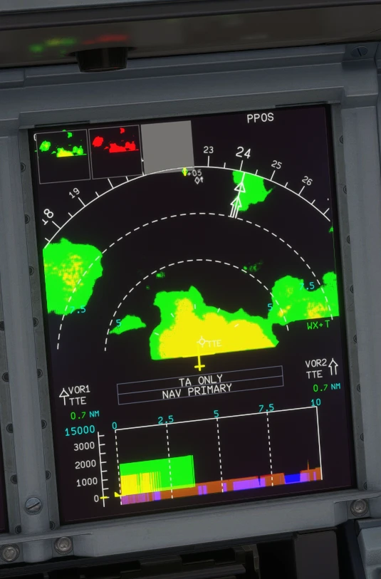
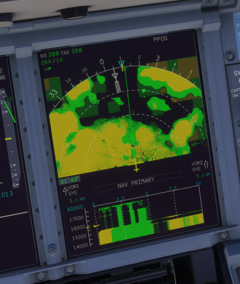
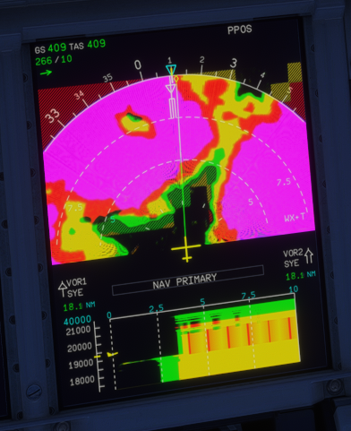

A380X weather radar on the ND and weather on the VD
The native weather radar on both A380X NDs, driven by the SURV panel, and the weather on the vertical display
AircraftA380XWhere to find itND in ARC or ROSE NAV with the WX overlay selected on the EFIS panel; MFD SURV CONTROLS (WXR block); the VD under the NDPR branchpr/02-a380x-nd-weather-radar (stacked on PR 1)StatusTested in the sim (September 2026).PicturesIn-sim screenshots taken during development (native WASM gauge; the browser harness cannot draw it).
1. What it is for
2. Using it
3. Weather on the VD
4. Limitations and why
1. What it is for
The A380X ND always showed WXR INOP (both WXR systems were hard-coded as failed) and had no radar picture. It now has the native radar of the A32NX, with the A380 rules, and the VD shows the weather on its vertical cut.

Figure 1. A380X ND with weather cells ahead, and the same cells on the VD below.
2. Using it
EFIS control panel: select the WX overlay.
MFD SURV CONTROLS (see the PR 5 manual): WXR AUTO, TURB on or off, MODE WX or MAP, WX ON VD.
The radar is shown when the WXR & TAWS system selected on the SURV panel is not failed. A system is failed only while its AESU is reset or its power is lost (AC ESS for system 1, AC 4 for system 2).
The ND range table is -1 (ZOOM, the airport map) and 10 to 640 NM; the radar is hidden at ZOOM.

Figure 2. Moderate rain (yellow) over a wide area, with its VD cut.

Figure 3. TURB on: heavy rain drawn magenta (turbulence proxy).
3. Weather on the VD
WX ON VD (SURV CONTROLS) shows the weather on the VD, along the same cut as the terrain (see the PR 9 manual).
Cells are drawn green and yellow with a red core; no magenta: the real VD does not display turbulence (FCOM DSC-31-20-40-10).
Heights are placed on the ADR baro-corrected altitude, like the VD's aircraft symbol.
4. Limitations and why
Limitation
Why
What to do
The VD weather is stylised.
The vertical MapView of MSFS is a single thin beam (tilting it crashes the gauge); the VD picture is built from the ND radar views.
-
PRED W/S and GAIN are not drawn.
The MSFS radar has no predictive windshear or gain.
-
No TURB-only mode.
The A380 has none: TURB off gives WX, on gives WX+T.